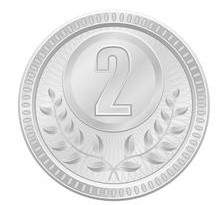
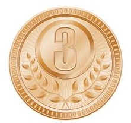

| Esporte | Categoria | Atleta | Medalha |
|---|---|---|---|
| Ginástica Artística Feminina | Salto | Rebeca Andrade | Ouro |
| Surfe | Masculino | Ítalo Ferreira | Ouro |
| Ginástica Artística Feminina | Individual Geral | Rebeca Andrade | Prata  |
| Skate Feminino | Skate Street | Rayssa Leal | Prata |
| Skate Masculino | Skate Street | Kelvin Hoefler | Prata |
| Judô Feminino | Até 78kg | Mayra Aguiar | Bronze  |
| Judô Masculino | Até 66kg | Daniel Cargnin | Bronze |
| Natação Masculino | 200m nado livre | Fernando Scheffer | Bronze |
| Natação Masculino | 50m livres | Bruno Fratus | Bronze |
| Tênis | Duplas femininas | Laura Pigossi e Luisa Stefani | Bronze |
 Voltar para guia principal
Voltar para guia principal